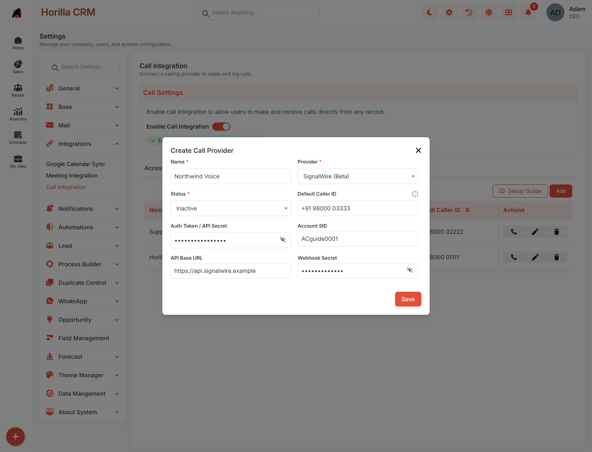
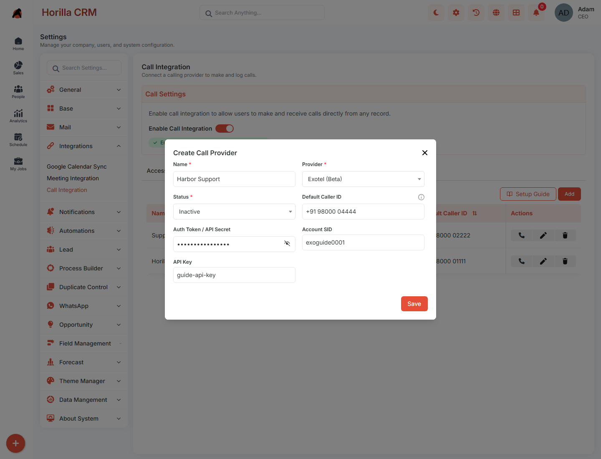
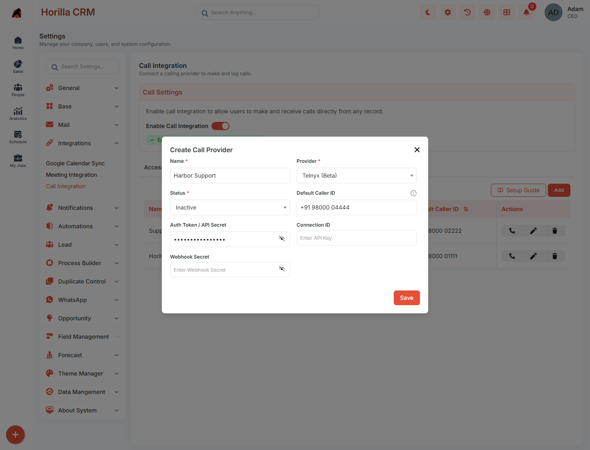

Call Integration
Go to Settings → Integrations → Call Integration. The page title is
Call Integration. The description is Connect a calling provider to make and
log calls.
Each user sets a caller ID from My Settings → Calls.
Call Settings explains that call integration lets users make and receive calls
directly from any record. The Enable Call Integration switch is on, and the
status reads Enabled — users can make and receive calls.
The Access
Control and Providers tabs appear while the switch is on.
Access Control
The tab line is Choose who can initiate calls.
Three cards set who may use calling. The
card in use is marked Active.
- All Users — every user in the company can use call integration. The card shows Click To Activate while another option is active.
- Specific Roles — only users with the selected roles can use call integration. The card shows Click To Select.
- Specific Users — only the selected people can use call integration. This card is Active, with 16 User(s) and Click To Add Or Remove Users.

Providers
The Providers tab lists each saved provider with Name, Provider, Status, Default Caller ID and Actions. Status can be Active, Inactive or Testing. Actions are test connection, edit and delete. Setup Guide opens the provider setup notes. Add opens Create Call Provider.

Add a provider
The fields change with the provider. Every provider asks for Name, Provider, Status, Default Caller ID and Auth Token / API Secret. The choices are Twilio, SignalWire (Beta), Telnyx (Beta), Sinch (Beta), Exotel (Beta) and Mock (Testing).
SignalWire also asks for Account SID, API Base URL and Webhook Secret.

Exotel asks for Account SID and API Key. Twilio and Sinch ask for Account SID.

Telnyx asks for Connection ID and Webhook Secret. Mock adds no extra fields.
